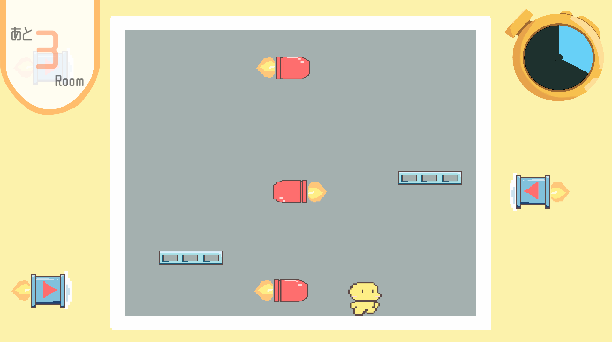
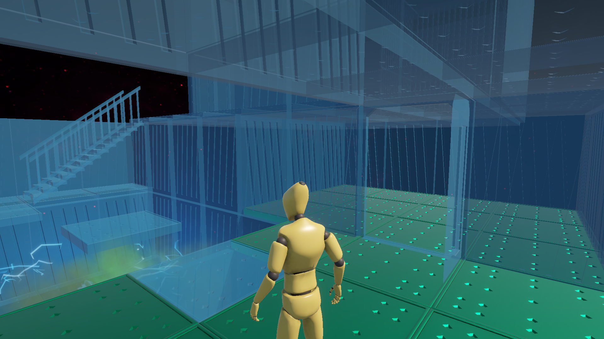
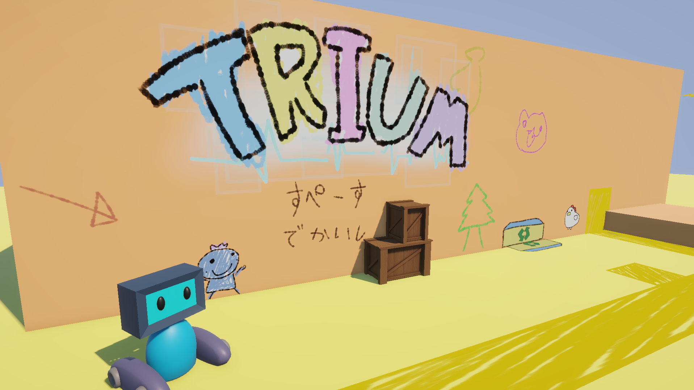
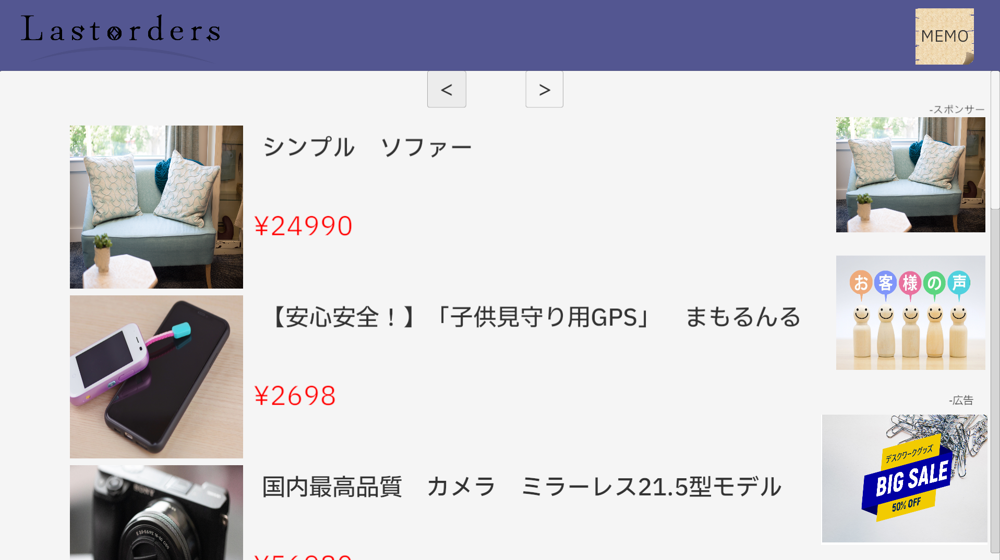
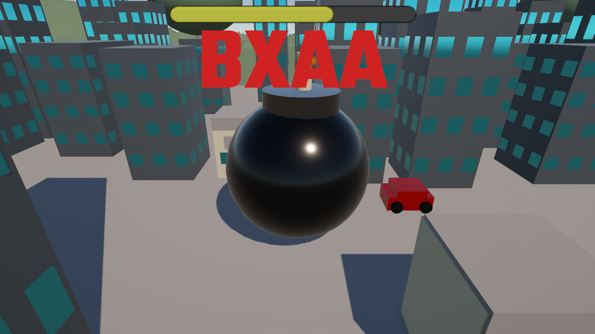
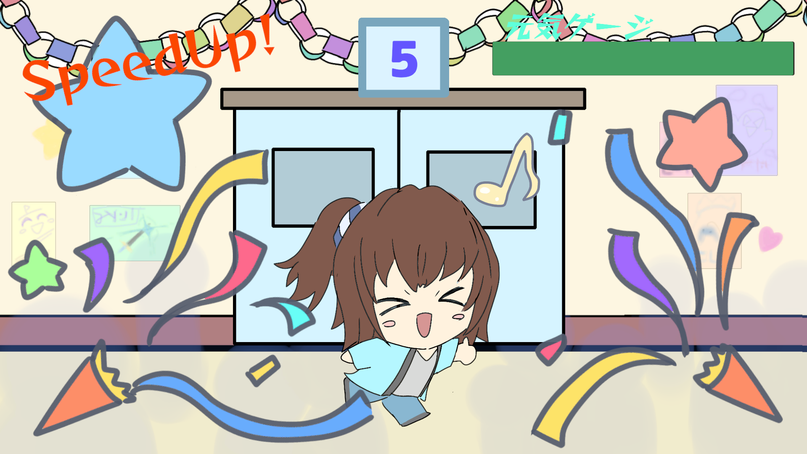
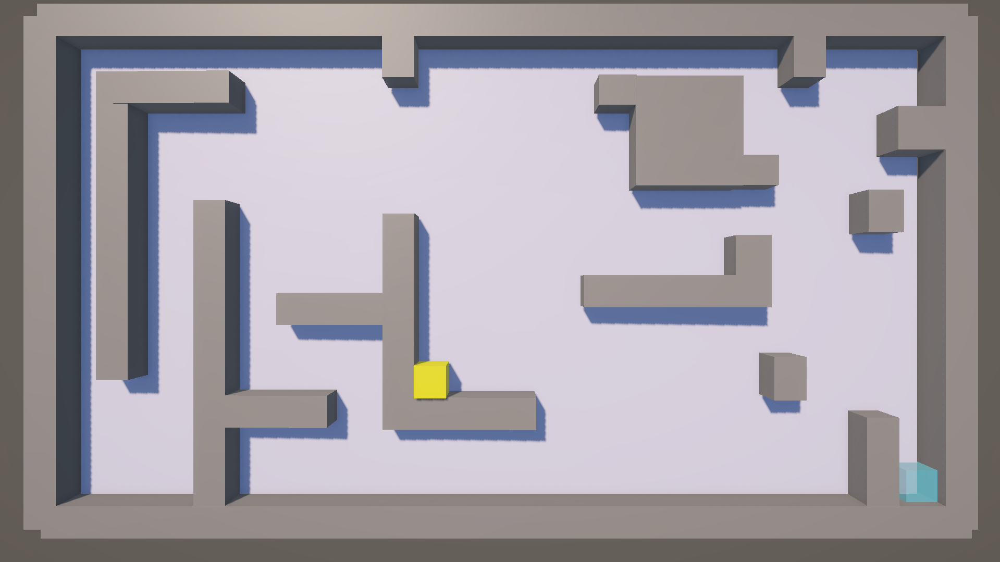

Unity / C# / Game Developer
GitHub
主にUnityを使ったゲーム制作をしています。
情報科学専門学校のゲーム開発サークルを創設し代表として約1.5年活動。
ゲームのアルゴリズムを考えるのが好き。が、いざ書こうとするとデバックや言語ごとの記述ルールの把握が苦手で毎回AIに怒られて直されます。
中学生、高校生時に生徒会長に就任。非常に有意義で、チーム開発など多くの活動の役に立つ良い経験でした。
ゲームの現実とはかけ離れた世界が好きで最近のゲームのなんでもリアルに近づけようとし過ぎる傾向に少し疑問を感じている。
ゲームはもっと自由であるべきだと思っている。でもリアル感のあるゲームも技術を感じられて好きではある。
結局のところゲーム全部大好きである。

Unityで制作した2Dアクションゲーム。サークルでの共同開発。
主にゲームの基本的構造のプログラム全般、仕掛けづくり、ステージ制作、イラストを担当。仲間にはステージ作りを依頼。
メンバーが初心者が多いので簡単に作れるようギミックやステージのテンプレートを作り、配置するだけで作れるようにしたり
ランダムでステージが切り替わる使用上テストしやすいように工夫した。
また、膨大な部屋数でも重くならないようにプレハブ化し、プレイヤーがワープするのではなくリストに登録した部屋がランダム出現するようにすることで
見せかけで体験を損なわずかつ最適化するように設計。
現在プレバージョンでこれからギミック、ルームの追加等を実施予定
生成AIを一部使用した作品です。（chatGPTによるコーディング補助、デバック補助）
次々とワープする不思議な部屋で決まった回数ワープをこなしクリアを目指す瞬間アクションゲーム。
操作:ASWD...移動,カーソル移動
:スペースキー...ジャンプ,決定
:バックスペースキー...前の画面に戻る
モード:ノーマル...ステージクリア型。レベルとステージを選択することで部屋の難易度とクリアに必要なワープ回数が変化。
:エンドレス...スコアタ型。すべての難易度が出現。失敗するまで無限に続く。現時点では未実装だがランキングも実装したい。
Unity / C#

3D探索アクションゲーム。個人製作。
プレイヤーは研究所の実験体被験code「DIVER」というダミー人形を操作して研究所の秘密を求め脱走を試みます。
地形をすり抜けるという簡単なアクションを根幹に作ったがかなり苦戦している。
例えば分厚い壁をすり抜けている時に解除したらどうするかなどの処理に追われていて中々ゲーム的な制作が進行しないでいる。
タグやレイヤーを用いてすり抜けの対象などを判定できるように設計。この後にどんなギミック作ってもタグレイヤーに気を付ければ問題なし。ちなみにタイトルは私の好きな漫画のとある能力から。
生成AIを一部使用した作品です。（chatGPTによるコーディング補助、デバック補助）
地形をすり抜けられるキャラを操作して研究所の脱走を目指す３Ｄ探索型ミステリーアクションゲーム。
操作:ASWD...移動
:左クリック...ダイブ（地形すり抜け）
:spaceキー...ジャンプ
:Eキー...使う、ドアを開ける
現状制作中なので説明がないのでここに補足。始まったらダイブを使用することでゲームを進行できます。緑の床はすり抜け不可。変なビリビリした煙に当たると死ぬ。ゴールも何もない。抜けすぎると無限落下する。
Unity / C#

まさかの2Dと3Dが融合したアクションパズルゲーム
個人製作。就活生からの質問で飽きるほど聞いた「2Dと3Dはどっちが評価がいい？」という質問にビビッと来てじゃあそのどちらでもあればいいじゃないかと思い制作。
設計段階では２Ｄプレイヤーもリジッドボディを使用する予定だったが３Ｄ面を自由に移動できたら面白そうという思いつきだけで専用の重力システムをプログラムするハメに。
また他にも２Dの映像を３D面に投射するだけのアイデアもあったがせっかくなら２D、３D、相互に干渉できたら面白そうという思いつきだけで両者の空間を一つの空間に作るハメに。
面移動、重力方向変更、２つのカメラこの要素が移動に干渉するので２Dキャラのコードの複雑化が避けられなかったのが課題点。がそれでもロボットと落書きのキャラ二人が協力して進むというコンセプトをうまく実装できたのはすごくよかった。
デバックの解説や調べもののみにAIは使用されています。
平面世界の落書き、ウォードと迷子のロボット、ロドの次元の違う二人を操作して力を合わせてゴールを目指す新ジャンル2D3Dアクションパズル！
操作:ASWD...「ロド」移動,
:十字キー...[ウォード]移動
:spaceキー...「ウォード」ジャンプ
:Zキー...「ロド」デンジプル（オブジェクト引き寄せ）
:Rキー...カメラ切り替え
※現状ステージが一つしかないですが今後ギミックなどいろいろブラッシュアップしていく予定。
Unity / C#

異変が起きる通販で異変を避けながら8つのお使い（？）をこなす高難易度８番ライクホラーゲーム。
個人製作。少しづつ制作に慣れてきてリストや構造体、クラスをうまく使えば通販を再現したゲームが作れるのでは？と思い制作。
しかしそう簡単にはいかず何度もAIにダメ出しされ修正しました。特に根底となるページ作りではまず登録された表示構造体をリストで登録し
それをページ切り替えで切り替えたり商品をクリックしたらその商品の詳細ページの中身を構造体として登録された文章や画像を呼び出す処理をしているため
異変による出力の変更などと相性が悪く相互性を持たせるのにすごく苦労した。それとその構造体の中身の登録、商品作りにすごく時間がかかった。
生成AIを一部使用した作品です。（chatGPTによるコーディング補助、デバック補助、photodirector内の画像編集AI）
異変があったら左のページ、異常なしなら右のページ。通販を探索してメモに残された8つの商品を購入してこの通販の謎に迫れ。「あなたに明日をお届け。」
コントローラー操作：左スティック…カーソル移動
A(B)ボタン…決定
PC操作:マウス移動…カーソル移動
左クリック…決定
Unity / C#

表示されるコマンドを正確に素早く入力するスリリングなハイスピードミニゲーム
個人製作。3D作品になれるべく練習として見た目は3Dに。blenderによるモデリングは少しやって断念。
textの表示がかなり悪いところが反省点。修正したい。かなり前に作ったが校内に展示して頂き、入学説明会などでも新入生が楽しんでくれているそう。
生成AIを一部使用した作品です。（chatGPTによるコーディング補助、デバック補助）
時間内に表示されるコマンドを素早く入力し続けて爆弾を大きくし大きくすればするほど入力成功時高得点！一度間違えたら即爆破！素早く入力することでスコアアップ！正確性と素早さの駆け引きがスリリング。
コントローラー操作:ABXY...ABXYコマンド入力
PC操作:ZXCVキー...ABXYコマンド入力
（コントローラーでのプレイを想定していますがPCでもプレイ可能）
Unity / C#

次々に出されるミニゲームをクリアして限界に挑む某瞬間アクションゲームのようなゲーム。
個人製作。学園祭の「いわふぇす」を盛り上げるべく作成し展示したゲーム。ちいさなお子様にも大人気！
ただし難易度と視認性が課題。素材はほぼ全て手書きであるがポップでゆるくキテレツな雰囲気を出そうとした結果わかりずらかったり、
スクロールを使うミニゲームでは視認性が悪く目視が難しい。そのうえ、期限に追われテストプレイを怠ったため自分ならできるけど他人が0からクリアする時に必要な情報等の欠落が激しい。
プログラム以外のことで大きく学びを得られた作品でした。
生成AIを一部使用した作品です。（chatGPTによるコーディング補助、デバック補助）
連続で出題されるミニゲームをクリアするゲーム！いかに素早く判断できるかが攻略のカギ。何度もリトライしてハイスコアを目指そう！
PC操作:十字キー＆スペースキー…ミニゲームに対応した操作。それを何に使うのか素早く判断するのもこのゲームの肝。
（コントローラーに対応しておりません）
Unity / C#

シンプルな迷路パズルゲーム。
個人製作。学園祭の「いわふぇす」を盛り上げるべく作成し展示したゲーム。普段ゲームに触れないお客様にもわかりやすく多くの方にプレイして頂きました。
他の自作ゲームの「いわふぇすランカー」の影でひっそりと並行制作していたゲーム。もしかしたらアクション操作のゲームが苦手な人もいるかもしれないと考え急遽制作したためクオリティとしては低め。
アルゴリズムもシンプルでただ壁をレイヤーかタグだったかで検知し壁まで移動。それを１カウントとして最短手でゴールオブジェクトに接触でクリア。細かいカウントのルール（ある一定距離以下動いたときなどをカウントに含めない等）に関してはかなり難しかったのでAIに協力してもらった。次は自分でできるようになりたい。
生成AIを一部使用した作品です。（chatGPTによるコーディング補助、デバック補助）
カベにぶつかるまで止まらないキューブを操作して迷宮から抜け出そう！君は何手でクリアできるかな！？最短手を探してみよう！
PC操作:十字キー…キューブの移動、カーソル移動
:スペースキー…リトライ、決定
（コントローラーは非推奨だが学校の展示デバイスでのXboxコンフィグアーケードコントローラーでの実行確認済み。switch非対応確認済み）
Unity / C#